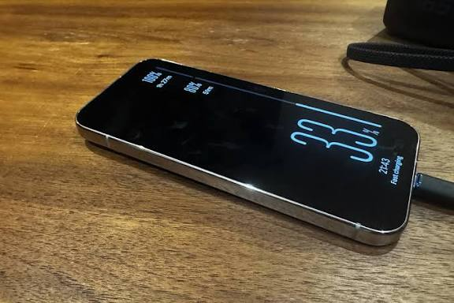
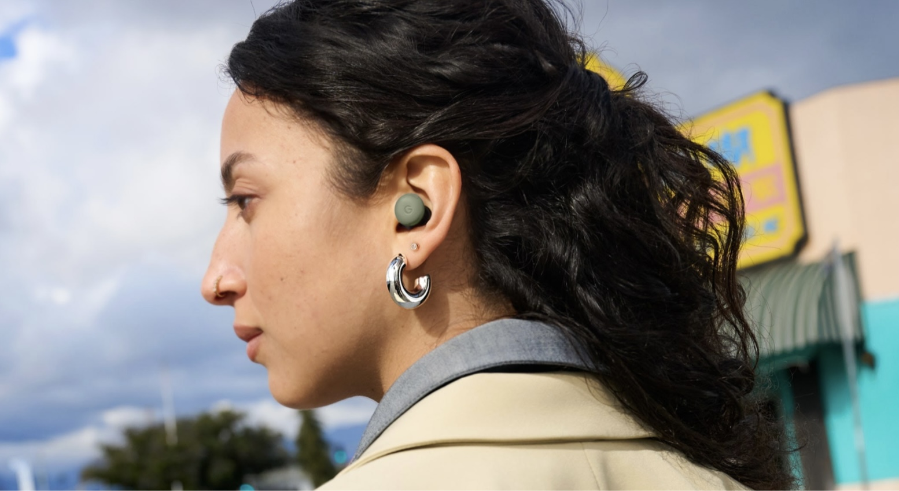
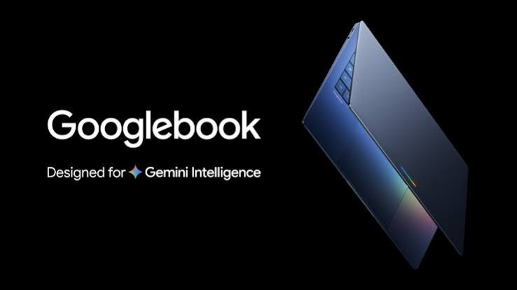
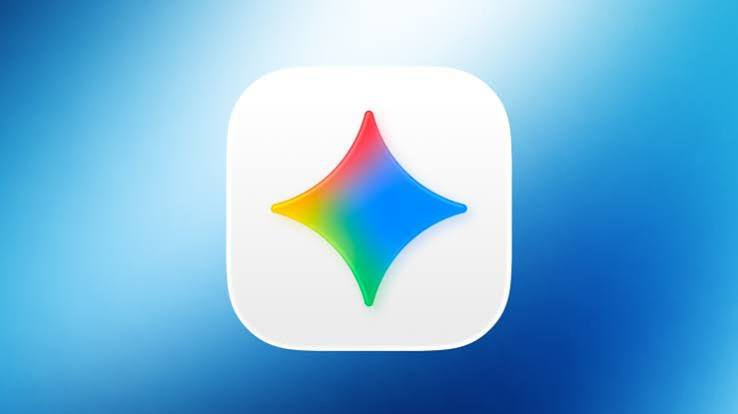
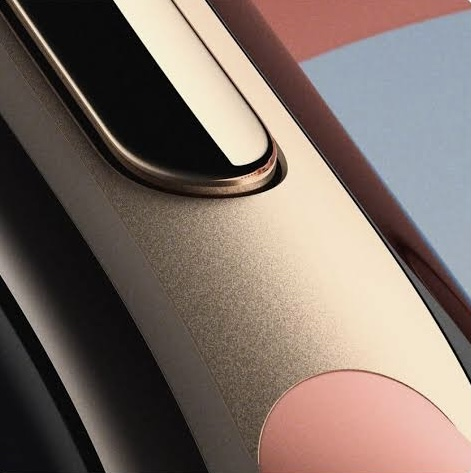
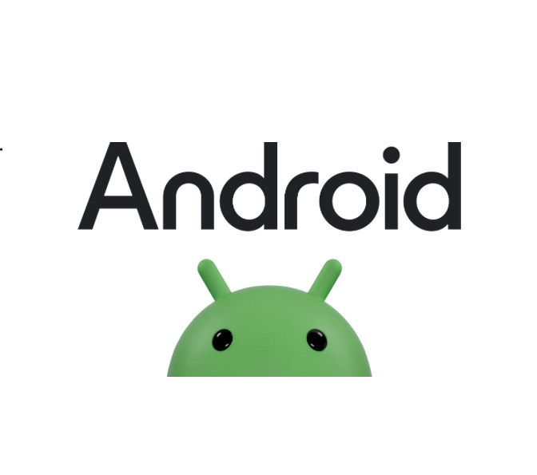
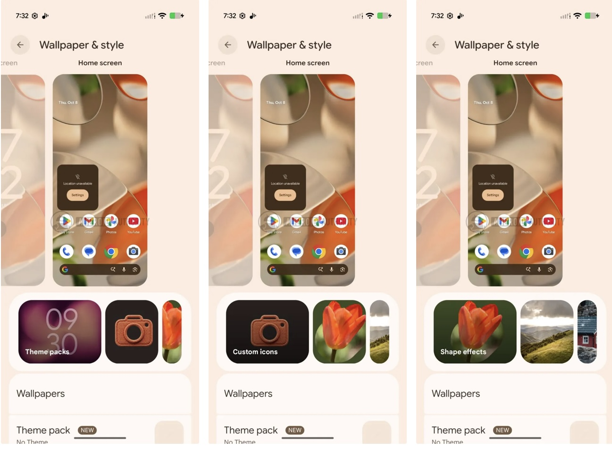
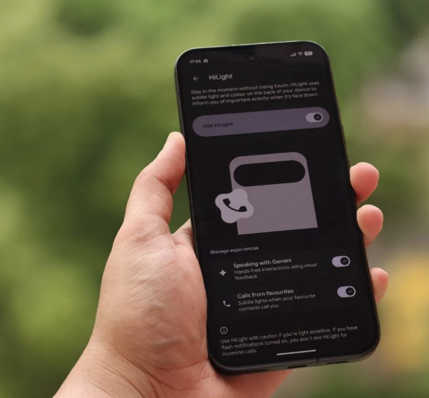
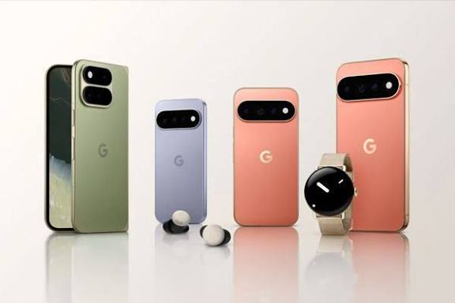

Actualités matérielles et logiciel, suivi des versions Beta partagées au fil de l'eau.
Accueil
Toutes les publications et l'actualité générale
À la une • Pixel Actu
Android 17 & Écosystème Pixel : Ce qu'il faut retenir aujourd'hui
Bienvenue sur votre point d'actualité quotidien dédié à l'univers Google Pixel et aux bêtas Android.
En direct aujourd'hui :
Mises à jour : Déploiement accéléré des dernières builds QPR avec des correctifs de stabilité majeurs.
Actualités en direct (RSS) :
Chargement des dernières actus...
💡 Utilisez la barre de navigation en bas pour explorer les nouveautés par catégorie : fiches appareils, suivi des bêtas et tutoriels pratiques.
Matériel & Écosystème
Bienvenue sur l'espace Pixel Phones & Watchs
Retrouvez ici les actualités, annonces officielles,dédiés aux smartphones Pixel et aux montres connectées Pixel Watch.
Équipe Pixel ActuDossier matériel
Fonctionnalités & Affichage8 octobre 2026
Google officialise le déploiement de ses économiseurs d'écran nouvelle génération sur la gamme Pixel 9
Après de premiers tests discrets, Google confirme le déploiement étendu de sa toute nouvelle suite d'économiseurs d'écran pour les Pixel 9, Pixel 9 Pro et Pixel 9 Pro Fold. Cette mise à jour logicielle transforme l'affichage de veille et la recharge sur station sans fil grâce à une refonte graphique inspirée de Material 3 Expressive.
L'interface de personnalisation des économiseurs d'écran se dote de nouveaux styles dynamiques (Crédit : 9to5Google)
Ce qui change sur la série Pixel 9
La mise à niveau enrichit le menu des économiseurs d'écran avec plusieurs options visuelles adaptatives :
Le style « Charge » grand format : Un affichage XXL du niveau de batterie qui occupe le centre de la dalle, parfaitement visible lorsque le smartphone repose sur un dock Qi2 ou un socle de charge.
Cadrans d'horloge modernisés : Arrivée de nouvelles polices géométriques et organiques qui reprennent les teintes de votre palette de couleurs dynamique.
Mode nuit automatique : Bascule automatique vers une luminosité ultra-basse et une teinte tamisée pour ne pas éblouir l'utilisateur dans une pièce sombre.
Activation et disponibilité
Le déploiement s'opère via une mise à jour côté serveur liée à l'application Pixel Ambient Services et aux composants système d'Android 17. Pour vérifier l'accès aux nouveaux styles sur votre appareil :
Rendez-vous dans Paramètres > Écran > Économiseur d'écran et parcourez les prévisualisations disponibles.
Les nouveaux économiseurs d'écran du Pixel 11 débarquent discrètement sur les Pixel 9 et Pixel 10
Bonne surprise pour les propriétaires de générations antérieures : Google commence à déployer discrètement les nouveaux styles d'économiseurs d'écran (Screen Savers) inaugurés avec la série Pixel 11 vers les Pixel 9, Pixel 9 Pro et Pixel 10. Au programme : le nouveau style d'affichage de charge grand format et des options d'horloges retravaillées.

Le mode économiseur d'écran s'enrichit de nouvelles horloges et de l'indicateur de charge grand format (Crédit : Android Authority)
Le nouveau style « Charge » grand format
La principale nouveauté visuelle introduite par le Pixel 11 est le style d'écran de veille Charge :
Pourcentage en police grasse et géante : Lorsque l'appareil est posé sur un chargeur sans fil ou branché en filaire, l'écran affiche le niveau de batterie dans une typographie massive impossible à manquer, même à distance.
Esthétique Material 3 Expressive : L'animation et les couleurs s'adaptent dynamiquement à la palette de votre thème système.
Horloges analogiques et numériques revisitées
En plus de l'indicateur de recharge, les utilisateurs de Pixel 9 Pro constatent l'apparition de variantes supplémentaires pour l'horloge :
De nouvelles polices d'écriture pour les horloges numériques.
Des cadrans analogiques minimalistes mieux intégrés avec le mode basse luminosité (Low Light Clock).
Un déploiement progressif côté serveur
Alors que la gamme Pixel 10 reçoit principalement le style Charge, les Pixel 9 semblent hériter de l'ensemble du catalogue de personnalisation. Comme souvent chez Google, l'activation s'effectue côté serveur et ne touche pour l'instant qu'un panel restreint d'utilisateurs avant une généralisation à grande échelle.
Pour vérifier la disponibilité sur votre appareil, rendez-vous dans : Paramètres > Écran et tactile > Économiseur d'écran.
Mise à jour majeure pour les Pixel Buds Pro, Pro 2 et 2a : pause automatique au sommeil, micro muet d'un geste et ANC dynamique
Google déploie une imposante mise à jour logicielle (firmware release_6.144) à destination de sa gamme d'écouteurs sans fil : les Pixel Buds Pro originaux, les Pixel Buds Pro 2 et les Pixel Buds 2a. Après les commandes vocales Gemini inaugurées le mois dernier, ce nouveau firmware apporte des fonctionnalités pratiques axées sur le confort quotidien et l'interconnexion au sein de l'écosystème Pixel.

Le firmware 6.144 s'étend aussi bien à la première génération de Pixel Buds Pro qu'aux modèles récents (Crédit : 9to5Google)
Détection du sommeil synchronisée avec la Pixel Watch
L'une des nouveautés phares exploite directement la synergie avec la Pixel Watch :
Pause automatique des médias : Lorsque les capteurs de sommeil de votre Pixel Watch détectent que vous commencez à vous endormir, la lecture audio en cours sur vos écouteurs se met automatiquement en pause.
Désactivation tactile et silence total : Le système désactive simultanément les zones tactiles des écouteurs pour éviter les appuis involontaires sur l'oreiller et coupe les notifications sonores.
Geste « Tap to Mute » lors des appels téléphoniques
Pour les communications vocales professionnelles ou personnelles, Google ajoute un geste rapide :
Micro coupé d'un simple toucher : Durant un appel téléphonique passé depuis un smartphone Pixel associé, un simple tapotement sur l'un des écouteurs permet de couper (mute) ou de réactiver instantanément votre micro sans manipuler l'écran du téléphone.
Réduction active du bruit dynamique (exclusivité Pixel Buds Pro 2)
Le modèle le plus récent bénéficie en exclusivité de l'ANC Dynamique (Dynamic Active Noise Cancellation) :
Grâce à la puce Tensor A1 intégrée, les Pixel Buds Pro 2 modulent en temps réel le niveau d'atténuation acoustique et le rendu sonore en fonction des variations sonores de votre environnement extérieur.
Comment installer la version 6.144 ?
Assurez-vous dans un premier temps d'avoir mis à jour l'application compagnon Pixel Buds sur le Google Play Store. Rendez-vous ensuite dans les réglages Bluetooth de votre smartphone Pixel : Plus de paramètres > Mise à jour du micrologiciel pour lancer manuellement la vérification du firmware release_6.144.
Googlebooks sous puces Intel : des difficultés signalées sur certaines applications Android complexes
Alors que la première vague d'ordinateurs portables de la gamme Googlebook fait son entrée sur le marché, une déclaration officielle transmise à 9to5Google met en lumière une contrainte technique : les modèles équipés de processeurs Intel peuvent rencontrer des ralentissements ou des problèmes de compatibilité sur les applications Android les plus lourdes.

Les premiers Googlebooks Lenovo, Asus et Acer embarquent des processeurs Intel Core Ultra (Crédit : 9to5Google / Intel)
L'écart d'architecture : x86 face à l'écosystème ARM
Ce défi rappelle les débuts de l'intégration des applications mobiles sur ChromeOS :
Traduction de code binaire : Les applications Android étant majoritairement compilées et optimisées pour les architectures ARM (comme Qualcomm Snapdragon ou MediaTek), les puces Intel x86 doivent traduire ces instructions en temps réel via la couche d'émulation native.
Impact sur les apps complexes : Si les applications légères et les réseaux sociaux s'exécutent sans accroc, les outils de productivité lourds, l'édition multimédia et les jeux 3D complexes subissent des pertes de fluidité ou des temps de chargement allongés.
La première vague dominée par Intel
Cette mise en garde s'avère particulièrement stratégique puisque les premiers Googlebooks commercialisés (conçus notamment par Lenovo, Asus et Acer) reposent majoritairement sur les nouvelles puces Intel Core Ultra Série 3 (Panther Lake), réputées pour leurs fortes capacités de calcul IA et leur autonomie en usage web classique.
Google collabore avec Intel, Qualcomm et les développeurs
Face à cette situation, Google a tenu à rassurer les utilisateurs en précisant travailler activement main dans la main avec Intel, Qualcomm et l'ensemble des créateurs d'applications pour publier des correctifs d'optimisation continus et étendre la liste des logiciels pleinement certifiés sur l'ensemble de la gamme.
Intelligence Artificielle & Appareils6 octobre 2026
Google restreint l'accès aux modèles Gemini pour les utilisateurs gratuits et abonnés AI Plus
D'après un rapport détaillé d'Android Authority, Google s'apprête à revoir drastiquement la segmentation de son intelligence artificielle embarquée et connectée. Dès le 9 octobre, les comptes gratuits ainsi que les abonnés à l'offre Google AI Plus verront leur accès aux modèles les plus avancés restreint, modifiant les capacités de réponse sur leurs appareils du quotidien.

Google ajuste la disponibilité de ses modèles d'IA sur terminaux mobiles et ordinateurs (Crédit : Android Authority)
Impact sur les smartphones et comptes sans abonnement
Les utilisateurs de terminaux mobiles utilisant l'application sans abonnement payant verront la puissance de calcul allégée :
Bascule sur modèle allégé : Les requêtes courantes seront désormais traitées par Gemini 3.1-Flash-Lite, une version optimisée pour la rapidité mais moins nuancée dans ses réponses complexes.
Retrait des déclinaisons Flash standard : L'accès direct aux variantes de pointe comme Gemini 3.6 Flash est désormais réservé aux paliers supérieurs.
L'offre Google AI Plus (4,99 $/mois) recalibrée
La formule d'entrée de gamme subit également une baisse de dotation :
Modèles Pro retirés : Les possesseurs de l'abonnement AI Plus ne pourront plus exécuter leurs requêtes via Gemini 3.1 Pro, l'outil basculant uniquement sur Flash-Lite et Flash standard.
Déploiement progressif : Des courriels explicatifs précisent le calendrier d'application selon les zones géographiques.
Niveaux d'intensité et exclusivités Pro / Ultra
Cette réorganisation s'accompagne de trois niveaux d'intensité de réflexion (« Low », « Medium » et « High ») qui réduisent les quotas disponibles en cas d'analyse complexe. Les paliers haut de gamme Google AI Pro (19,99 $/mois) et AI Ultra conservent quant à eux l'accès complet aux architectures Pro ainsi qu'au mode de raisonnement parallèle avancé Deep Think.
Mise à jour système Google d'octobre 2026 : prise en charge NFC pour les balises de suivi et connectivité matérielle
La mise à jour système Google d'octobre 2026 (Google Play Services v26.39 et Play Store v53.5) apporte des évolutions matérielles concrètes pour l'écosystème d'appareils Android, avec une refonte majeure de l'appairage des traceurs et de la connectivité multi-écrans.
Balises et traceurs : intégration du NFC et configuration simplifiée
Le réseau de localisation des objets connectés gagne en ergonomie et en interopérabilité directe :
Identification instantanée par NFC : Il devient possible d'approcher simplement son smartphone d'une balise de suivi égarée pour lire ses informations de contact et accéder immédiatement à ses réglages sans ouvrir manuellement l'application dédiée.
Nouvel assistant d'appairage : Lors de l'enregistrement initial d'un tracker, le système permet de lui attribuer directement une catégorie d'objet (vélo, sac, véhicule), de le renommer et d'activer les rappels d'éloignement.
Connectivité des terminaux et sécurité embarquée
Le déploiement renforce également la communication entre téléphones, accessoires et véhicules connectés :
Partage de clés numériques et profils : Amélioration de la gestion des clés de voiture numériques et de la synchronisation des autorisations entre smartphones et montres connectées.
Affichage des cartes dans Wallet : Gestion enrichie de l'illustration graphique des cartes de fidélité et de paiement directement au niveau des notifications d'invitation au paiement sans contact.
Android Automotive : Prise en charge des tokens graphiques permettant aux constructeurs automobiles d'harmoniser les teintes des applications Google avec l'habillage de leur tableau de bord.
Fuite massive du Google Fitbit Edge : écran AMOLED incurvé, capteurs de pointe et coaching IA par Gemini
D'après des documents internes et des rendus exclusifs relayés par 9to5Google, Google prépare le renouvellement de sa branche d'objets connectés dédiés à la santé avec un nouvel appareil haut de gamme : le Fitbit Edge. Positionné à la frontière entre le bracelet d'activité traditionnel et la montre connectée complète, ce modèle repense entièrement l'expérience ergonomique et logicielle de la gamme Fitbit.

Design, matériaux et affichage
Le Fitbit Edge introduit une rupture esthétique majeure par rapport au Fitbit Charge 6 :
Châssis premium ultra-mince : Un boîtier profilé en aluminium recyclé de qualité aérospatiale, conçu avec une courbure anatomique qui épouse le poignet pour limiter toute gêne pendant le sommeil.
Écran AMOLED incurvé 3D : Dalle tactile plus large, protégée par un verre trempé Corning résistant aux rayures, offrant un pic de luminosité supérieur à 1 200 nits pour une excellente lisibilité en extérieur.
Affichage permanent (Always-On Display) : Nouveaux cadrans dynamiques économes en énergie capables d'ajuster leur contraste selon la lumière ambiante.
Système d'attache revu : Abandon des clips mécaniques au profit d'un système magnétique propriétaire renforcé, facilitant l'interchangeabilité des bracelets (silicone respirant, tissu tressé et cuir végan bicolore).
Suite de capteurs biométriques et suivi médical
Sur le plan du suivi physique, l'appareil intègre la suite de métriques la plus avancée jamais proposée sur un tracker Fitbit :
Capteur cEDA de nouvelle génération : Mesure continue de l'activité électrodermale pour détecter les réactions de stress émotionnel en direct et proposer des exercices de cohérence cardiaque.
Électrocardiogramme (ECG) embarqué : Application dédiée pour le dépistage de la fibrillation auriculaire via les tranches métalliques tactiles du boîtier.
Thermomètre cutané continu : Suivi nocturne des variations de température corporelle pour anticiper les débuts de maladies et affiner le suivi des cycles menstruels.
Oxymétrie de pouls (SpO2) et VO2 Max : Estimation de la saturation en oxygène dans le sang et score d'aptitude cardio calculé automatiquement lors des sessions de course ou de marche.
L'intégration en profondeur de Gemini et de Fitbit Coach
La véritable nouveauté réside dans l'intégration native de l'intelligence artificielle générative de Google :
Coaching proactif par Gemini : L'IA croise les données de sommeil, la charge d'entraînement des jours précédents et la variabilité de la fréquence cardiaque (VRC) pour générer des synthèses écrites en langage naturel dès le réveil, accompagnées de recommandations concrètes sur l'intensité des efforts recommandés.
Score d'aptitude quotidien affiné : Plus contextuel, le score prend désormais en compte les heures de coucher irrégulières et les phases de récupération active.
Commandes vocales simplifiées : Micro intégré permettant de dicter des requêtes rapides à l'assistant Gemini (minuteurs d'entraînement, rappels d'hydratation, enregistrement des repas).
Connectivité, autonomie et écosystème
Le Fitbit Edge mise sur la longévité et l'autonomie, conservant son avantage historique sur les montres Wear OS traditionnelles :
Jusqu'à 7 jours d'autonomie : Une gestion énergétique optimisée permettant d'assurer une semaine complète d'utilisation sans écran Always-On, ou 4 à 5 jours avec l'affichage continu activé.
Puce GPS et GLONASS autonome : Enregistrement précis des parcours de running ou de vélo sans nécessiter d'emporter son smartphone.
Paiements sans contact & Musique : Prise en charge de Google Wallet via NFC et commandes de lecture pour YouTube Music et Spotify.
Disponibilité et positionnement tarifaire
Selon les sources industrielles citées, le Fitbit Edge viendrait s'insérer sous la gamme Pixel Watch avec un positionnement tarifaire estimé aux alentours de 199 € / 199 $, offrant une alternative idéale pour les sportifs recherchant un suivi approfondi de la santé sans la contrainte d'une recharge quotidienne.
Google présente les « Google Books » : une nouvelle génération de PC portables propulsée par Android et Gemini
Dans une vidéo officielle menée par Dieter Bohn, Google lève le voile sur sa nouvelle vision de l'ordinateur portable : les Google Books. Conçus à partir de zéro, ces appareils fusionnent la vitesse et la sécurité de ChromeOS avec la richesse applicative d'Android et les capacités avancées de l'intelligence artificielle Gemini.
Une symbiose totale avec l'écosystème Android
Construits sur le socle technique d'Android, les Google Books apportent une intégration poussée avec les smartphones :
Accès instantané au téléphone : Votre smartphone s'affiche directement sous forme d'icône dans la barre des tâches grâce à la fonction « Cast My Apps ».
Reprise d'activité (« Continue On ») : Débutez une tâche sur votre mobile et poursuivez-la sur le grand écran de l'ordinateur en un instant.
Gestionnaire de fichiers unifié : Les fichiers du téléphone sont immédiatement accessibles sans transfert manuel, accompagnés d'une recherche intelligente capable de comprendre le contenu des documents.
Des caractéristiques haut de gamme et un vaste catalogue
Cinq constructeurs partenaires majeurs (Acer, Asus, Dell, HP et Lenovo) lancent les premiers modèles de référence :
Performances et autonomie : Puces Qualcomm et Intel (MediaTek à venir), 16 à 32 Go de mémoire vive de base, châssis ultra-fins silencieux et jusqu'à 14 heures d'autonomie.
Applications web et mobiles : Le navigateur Chrome complet avec ses extensions, combiné aux applications natives Android (WhatsApp, Photoshop, CapCut, Netflix avec téléchargement hors-ligne).
L'intelligence artificielle au quotidien avec Gemini
Le système intègre nativement des outils d'assistance pensés pour rester naturels à l'usage :
Magic Pointer : Agitez le curseur pour cibler un ou plusieurs éléments à l'écran et interroger directement Gemini.
Rambler : Un moteur de dictée vocale avancé qui nettoie automatiquement les hésitations et tics de langage partout dans le système.
Outils avancés : Création assistée de widgets personnalisés pour l'écran d'accueil, intégration d'applications comme Anti-gravity et terminal Linux sécurisé via l'isolation PKVM pour les développeurs.
Google préparerait l'après-ChromeOS : une transition programmée vers « Googlebook OS »
Une feuille de route à long terme relayée par les observateurs de l'écosystème Google évoque la fin progressive de ChromeOS à l'horizon 2034. Pour lui succéder, la firme miserait sur un système repensé, baptisé pour l'instant « Googlebook OS », unifiant davantage ses technologies mobiles et bureautiques.
Les axes de cette refonte logicielle
Cette stratégie d'unification viserait à combler les frontières restantes entre Android et l'expérience bureau :
Convergence matérielle et logicielle : Simplifier l'environnement pour proposer une continuité totale entre les smartphones Pixel, les tablettes et les futurs ordinateurs portables.
Fondations système unifiées : Rapprocher le socle technique de l'OS avec celui d'Android afin d'optimiser l'exécution des applications et de rationaliser la maintenance des pilotes.
Transition douce et pérennité : L'échéance lointaine annoncée permettrait de garantir le cycle de vie habituel des Chromebooks actuels jusqu'à leur date d'expiration de support officiel.
Une vision à long terme
Si le calendrier reste très étalé dans le temps, ces réflexions confirment l'ambition continue de Mountain View de consolider son écosystème logiciel face aux solutions intégrées de ses concurrents.
Google Pixel 11a : de premières indiscrétions dévoilent des choix de design surprenants
Alors que la gamme Pixel continue d'évoluer, les premières fuites concernant le futur modèle milieu de gamme de Google, le Pixel 11a, commencent à émerger. Les premiers rendus suggèrent des ajustements inattendus qui bousculent les lignes habituelles de la série « a ».
Ce que révèlent les premiers visuels
Les détails partagés mettent en lumière une volonté de renouvellement esthétique tout en conservant l'ADN de la marque :
Évolution du bandeau photo : Le module caméra emblématique adopte une découpe retravaillée, s'inspirant des lignes des modèles haut de gamme récents tout en affinant son intégration au dos de l'appareil.
Lignes plus anguleuses : À contre-courant des arrondis marqués des précédentes générations, le boîtier opterait pour des bordures plus plates favorisant une prise en main moderne.
Matériaux et finitions : Google miserait sur des coloris inédits et une finition arrière soignée pour renforcer l'aspect premium de sa gamme abordable.
Lancement attendu
Fidèle au calendrier de Google pour ses modèles plus accessibles, ce terminal devrait être officialisé dans les mois à venir, confirmant ou non la nouvelle orientation visuelle de Mountain View.
Google dévoile Gemini 4 « Argon » : une nouvelle génération de modèles d'IA plus rapides et précis
Google franchit un nouveau cap dans le développement de ses modèles d'intelligence artificielle avec l'annonce officielle de Gemini 4, portant le nom de code interne « Argon ». Une itération qui met l'accent sur l'efficacité sur appareil et des capacités de raisonnement multimodal accrues.
Quelles sont les nouveautés de l'architecture « Argon » ?
Cette nouvelle génération apporte des améliorations ciblées pour enrichir l'écosystème Android et les fonctionnalités exclusives aux appareils Pixel :
Traitement local optimisé : Grâce à des optimisations matérielles pour les processeurs Tensor récents, les déclinaisons embarquées exécutent les requêtes plus vite avec une consommation énergétique maîtrisée.
Raisonnement multimodal fluide : La compréhension combinée du texte, des images et des flux vidéo gagne en précision, autorisant des réponses contextuelles immédiates dans les applications du quotidien.
Latence réduite : Les interactions vocales et les requêtes en direct affichent un temps de réponse nettement raccourci, rapprochant l'expérience d'une conversation instantanée.
Déploiement progressif
Le déploiement de Gemini 4 « Argon » s'effectue par étapes, débutant par les services cloud et l'application Gemini, avant une intégration plus poussée au cœur des fonctionnalités logicielles des smartphones Pixel pris en charge.
Apple Music 7.0 sur Android : une refonte visuelle majeure inspirée du « Liquid Glass »
Apple continue de soigner ses applications sur l'écosystème Android. La version 7.0 d'Apple Music amorce une refonte visuelle d'envergure, introduisant un style graphique tout en transparence baptisé « Liquid Glass », pensé pour moderniser l'expérience de lecture.
Un design tout en profondeur et en fluidité
Cette mise à jour apporte des ajustements esthétiques notables au lecteur et à la navigation globale de l'application :
Effets de translucidité : L'interface exploite des dégradés de flou dynamique et de verre poli en arrière-plan, réagissant harmonieusement avec les pochettes d'albums en cours de lecture.
Lecteur repensé : Les commandes multimédias et la barre de progression bénéficient d'un contraste affiné pour faciliter la manipulation d'une seule main sur grand écran.
Transitions douces : Les animations d'ouverture de volet et de basculement entre listes de lecture se montrent nettement plus fluides.
Optimisations et intégration Android
Au-delà de l'aspect purement visuel, cette mouture 7.0 optimise la gestion des ressources système, garantissant un défilement plus stable des longues playlists et réduisant l'impact sur l'autonomie en arrière-plan. L'intégration avec les widgets de l'écran d'accueil et le centre de contrôle audio d'Android a également été renforcée.
En résumé
Avec cette version 7.0, Apple démontre une fois de plus son engagement à proposer une application de streaming complète, soignée et moderne sur les appareils Android, s'alignant sur les standards de design actuels.
Google Store & Écosystème
Google lance son programme de parrainage pour le Pixel 11 : avantages et fonctionnement
Alors que la nouvelle gamme Pixel 11 s'installe sur le marché, Google relance son célèbre programme de parrainage sur le Google Store. Une initiative bien rodée qui permet aux propriétaires de Pixel de partager des avantages exclusifs avec leurs proches tout en cumulant des crédits d'achat.
Comment fonctionne l'offre ?
Le principe reste fidèle aux éditions précédentes : chaque utilisateur éligible reçoit un code promotionnel personnel à transmettre à un contact intéressé par l'achat d'un smartphone de la gamme Pixel 11.
Pour le filleul : Une réduction immédiate appliquée directement au panier lors de la commande de son nouvel appareil.
Pour le parrain : Un bon d'achat crédité sur le Google Store une fois la période de retour légale passée, utilisable sur l'ensemble du catalogue d'accessoires et d'objets connectés.
Conditions et limites
Comme à l'accoutumée, Google encadre cette opération avec quelques règles strictes :
Le code n'est généralement utilisable qu'un nombre limité de fois par compte.
L'achat doit être effectué directement depuis le Google Store officiel.
Les crédits accumulés ont une date de validité à ne pas dépasser.
En résumé
Une opportunité intéressante si vous prévoyez d'équiper un proche ou si vous souhaitez financer de futurs accessoires (chargeurs Qi2, coques officielles ou bracelets connectés) grâce aux crédits obtenus.
ANOMALIE & SYSTÈME
Un bug NFC paralyse le paiement sans contact sur les Google Pixel
De nombreux utilisateurs rapportent l’échec complet des transactions sans contact via Google Wallet et des portiques de transport, touchant plusieurs générations de smartphones Pixel.
Alors que la gamme Pixel 11 vient tout juste d’arriver sur le marché, une anomalie technique majeure fait surface. Un bug critique affecte actuellement la fonction « Tap-to-Pay » (paiement sans contact), rendant les transactions impossibles sur les terminaux de paiement électronique (TPE).
Un problème étendu du Pixel 8 au Pixel 11
Les signalements se multiplient depuis deux semaines sur les plateformes communautaires, notamment Reddit. Si l’hypothèse initiale ciblait une antenne NFC légèrement déplacée sur les récents modèles imposant d’ajuster l’angle du téléphone, le problème s’avère bien plus vaste : les témoignages concernent aussi bien la série Pixel 8 que les Pixel 11 Pro XL.
Origine logicielle suspectée : La puce NFC continue d’opérer normalement pour la lecture de tags ou l’appairage rapide. Le blocage cible spécifiquement les transactions sécurisées, pointant vers une récente mise à jour logicielle défaillante liée aux services Google.
En attente d’un correctif officiel
Pour le moment, Google n’a pas encore commenté officiellement l’incident ni déployé de correctif d’urgence via les Services Google Play ou les mises à jour système mensuelles. En attendant un patch, les utilisateurs touchés doivent repasser à leur carte bancaire physique pour régler leurs achats du quotidien.
Suivi Logiciel
Espace des versions Beta d'Android
Suivi complet des versions trimestrielles (QPR), rapports de bugs corrigés et nouveautés en cours de test sur les appareils Google Pixel.
Programme BetaNotes de versions
Android Canary • Bêta & Aperçu8 octobre 2026
Android Canary 2610 : refonte de la personnalisation et ouverture de HiLight à WhatsApp

Aperçu
Build expérimentale Canary 2610 déployée sur la gamme Pixel.
La build Android Canary 2610 prépare l'avenir de la personnalisation Pixel en éclatant les effets de fond d'écran en trois sous-menus et en étendant l'usage du voyant HiLight.
Cette mise à jour apporte des changements majeurs repérés par la communauté dans les entrailles de l'interface Pixel :

Style
Shape effects, Animate et Weather effects.

HiLight
Intégration confirmée des alertes WhatsApp.
Détails des nouveautés :
Nouveaux styles graphiques : fin de l'option unique, place aux décompositions géométriques et effets météo temps réel.
Notification LED HiLight : ouverture tant attendue aux applications tierces en commençant par WhatsApp.
Mises à jour & Sécurité6 octobre 2026
Mise à jour Android 17 d'octobre 2026 : correctifs ciblés pour les Pixel et clap de fin pour la gamme Pixel 6
Google vient de lancer le déploiement de son bulletin de sécurité d'octobre 2026 pour Android 17 sur l'ensemble de la gamme Pixel prise en charge. En plus de colmater 28 failles de sécurité, cette mise à jour mensuelle apporte trois correctifs fonctionnels majeurs et marque une étape charnière : la toute dernière mise à jour logicielle régulière garantie pour les Pixel 6 et Pixel 6 Pro.

Le patch de sécurité d'octobre 2026 est disponible pour les Pixel 6 jusqu'aux récents Pixel 11 (Crédit : 9to5Google)
Les 3 correctifs fonctionnels déployés
Le journal des modifications détaille trois résolutions de bugs particulièrement attendues par la communauté :
Clavier virtuel dans les champs de recherche : Correction d'une anomalie qui empêchait parfois le clavier virtuel (Gboard) de s'afficher lors de la sélection d'un champ de saisie de recherche (concerne les générations antérieures).
Distorsion audio lors des appels VoIP : Résolution d'un grésillement ou d'un son parasite affectant la sonnerie lors de certains appels vocaux via Internet (Pixel 8, 8a, 9, 10 et leurs déclinaisons Pro).
Orientation des photos et vidéos : Correction d'un bug matériel/logiciel où les clichés capturés ou les vidéos enregistrées étaient parfois enregistrés avec une mauvaise rotation dans la galerie (série Pixel 11).
28 failles de sécurité corrigées
Le bulletin de sécurité mensuel daté du 1er octobre 2026 corrige 28 vulnérabilités du système d'exploitation Android, complétées par 6 correctifs exclusifs aux composants matériels Google Tensor et modems Pixel.
Adieu officiel pour les Pixel 6 et 6 Pro
Lancés en octobre 2021, les Pixel 6 et Pixel 6 Pro atteignent ce mois-ci le terme de leurs 5 années de mises à jour de sécurité garanties. Ce patch d'octobre 2026 constitue leur ultime livraison logicielle programmée du cycle officiel de Google.
Android 17 QPR3 Beta 1 disponible sur Pixel : correctifs majeurs, refonte des réglages et fonctions Gemini
Google vient de lancer le cycle de préversion pour Android 17 QPR3 en déployant la première version bêta à destination des smartphones Pixel éligibles. Destinée à préparer la future mise à jour trimestrielle stable attendue pour mars 2027, cette build apporte son lot de peaufinages visuels et résout une vingtaine de dysfonctionnements système.
Les nouveautés visuelles et fonctionnelles
Bien que ce cycle QPR évite les modifications profondes des API pour préserver la stabilité des applications, plusieurs changements notables font leur apparition :
Tuile Paramètres rapides pour Notes : Une nouvelle tuile d'accès direct dédiée à l'application Google Notes fait son entrée dans le panneau des réglages rapides.
Ajustements de la barre d'état : Des icônes affinées, notamment une icône VPN plus marquée, un symbole silencieux harmonisé avec le curseur de volume, et des pictogrammes Bluetooth et Mode avion légèrement redimensionnés.
Expansion de Gemini Intelligence : L'animation de démarrage Gemini Intelligence s'étend désormais aux modèles Pixel 10, tandis que l'option « Assistance proactive » s'installe au sein des paramètres système au-dessus de Magic Cue.
Une vaste série de correctifs ciblés
Cette mise à jour s'attaque à de nombreux bugs remontés par la communauté ces dernières semaines :
Déverrouillage et biométrie : Correction des blocages de l'écran lors de l'utilisation du capteur d'empreintes digitales et des plantages liés à l'exigence des yeux ouverts pour le Face Unlock.
Connectivité & Réseau : Résolution du bug où les profils eSIM se désactivaient automatiquement dans les paramètres, correction d'une boucle de crash du service téléphonique lors de l'attribution des index SIM, et amélioration de la reconnexion automatique au Wi-Fi.
Autonomie et veille : Élimination de la surconsommation de batterie causée en arrière-plan lorsque la fonction « Retourner pour le mode Chut » (Flip to Shh) était active.
Affichage et multitâche : Correction des aperçus manquants dans l'écran des applications récentes et de la rotation anormale de la caméra à 90° lors des appels vidéo en mode bureau sur écran externe.
Audio Bluetooth : Fin des coupures de lecture sur les appareils compatibles LHDC v5 lors de la déconnexion d'un second appareil jumelé.
Android 17 QPR2 Beta 6.1 : Google déploie un correctif intermédiaire, la gamme Pixel 11 au rendez-vous
Dans la foulée de la mise à jour publiée la semaine passée, Google poursuit l’optimisation de sa prochaine mise à jour trimestrielle avec le déploiement d’Android 17 QPR2 Beta 6.1. Cette mise à jour corrective s’adresse à un large éventail d’appareils Pixel, y compris les récents modèles de la série Pixel 11.
Google maintient un rythme soutenu dans son calendrier de développement. Quelques jours seulement après la Beta 6, la firme de Mountain View propose une version corrective intermédiaire numérotée Beta 6.1.
Deux builds distincts en circulation
Pour ce déploiement, Google a scindé la mise à jour en deux numéros de build spécifiques :
CP41.260831.011 : réservé aux derniers-nés de la gamme, à savoir les Pixel 11, Pixel 11 Pro, Pixel 11 Pro XL et le Pixel 11 Pro Fold.
CP41.260831.007.A3 : destiné à l’ensemble des autres terminaux éligibles.
Un correctif sans changelog détaillé, mais un problème connu à signaler
Fidèle aux mises à jour incrémentielles d'appoint (« .1 »), Google n’a pas fourni de liste exhaustive des bugs corrigés sous le capot. La firme met toutefois en garde contre un effet de bord connu : les utilisateurs du Pixel 11 Pro Fold devront probablement réenregistrer leur visage pour la reconnaissance faciale (Face Unlock) après l'installation.
Appareils compatibles et disponibilité
Le déploiement est en cours via une mise à jour Over-The-Air (OTA) pour tous les utilisateurs inscrits au programme Android Beta. Les images système officielles et fichiers OTA sont d'ores et déjà téléchargeables pour les appareils suivants :
Pixel 6a
Pixel 7, 7 Pro et 7a
Pixel 8, 8 Pro et 8a
Pixel 9, 9 Pro, 9 Pro XL, 9 Pro Fold et 9a
Pixel 10, 10 Pro, 10 Pro XL, 10 Pro Fold et 10a
Pixel 11, 11 Pro, 11 Pro XL et 11 Pro Fold
Pixel Tablet et Pixel Fold (original)
Émulateur Android
Comme à l'accoutumée, les participants au programme de test peuvent signaler les anomalies ou bugs résiduels directement via l'application Android Beta Feedback présente dans le tiroir d'applications et les réglages rapides.
Programme Android BetaCorrectif QPR2 Beta 6.1
Android 17 QPR2 Beta 6 et 6.1 : tour d’horizon des nouveautés et correctifs avant la sortie stable
Alors que le déploiement de la version stable d'Android 17 QPR2 approche à grands pas pour le mois de décembre, Google accélère le rythme. La firme de Mountain View vient de déployer coup sur coup Android 17 QPR2 Beta 6 ainsi qu'un correctif rapide, la Beta 6.1. Destinée aux smartphones et tablettes Google Pixel éligibles, cette mise à jour apporte des ajustements d'interface, retire temporairement certaines fonctionnalités attendues et corrige d'importants bugs de stabilité.
1. Retouches visuelles et fonctionnalités clés
HiLight pour les messages favoris : cette fonctionnalité affine la mise en avant des messages reçus de vos contacts favoris, garantissant une meilleure hiérarchisation des communications prioritaires.
Nouvel indicateur de charge : sur le plan graphique, Google a ajouté un contour visible autour de l'icône de la batterie lorsque l'appareil est branché ou en charge sans fil.
Le verrouillage d'applications (App Lock) passe à la trappe : surprise notable de cette mouture, Google a retiré la fonctionnalité native d'App Lock au sein de la Beta 6. Ce retrait rappelle celui de la personnalisation des paramètres rapides (Quick Settings). Reste à savoir si ces options feront leur retour d'ici la version finale de décembre ou si elles seront repoussées à une mise à jour ultérieure.
2. Correctifs majeurs et stabilité
La Beta 6 se concentre massivement sur la résolution de bugs critiques signalés par la communauté des testeurs :
Stabilité et redémarrages intempestifs :
Correction d'un plantage du noyau (kernel crash) qui provoquait un redémarrage forcé lorsque des applications tierces sollicitaient simultanément le micro et la caméra pendant une authentification biométrique.
Résolution des reboots soudains sur le Pixel 9 Pro Fold lors de l'ouverture du viseur photo dans certaines applications tierces.
Correction des blocages, gels et crashs survenus lors du défilement (scrolling).
Affichage et interface :
Correction d'une régression graphique où le contenu en mode boîte aux lettres (letterbox) débordait à travers la barre d'état durant les transitions d'applications.
Fin de l'écran noir affiché de façon inopinée par l'économiseur d'écran pendant la recharge.
Possibilité retrouvée de fermer d'un simple balayage les applications verrouillées depuis le menu des applications récentes (Recents).
3. Problème connu sous la Beta 6.1
Si le déploiement immédiat de la Beta 6.1 visait à stabiliser le système, Google note un désagrément ciblé : les utilisateurs du Pixel 11 Pro Fold pourraient être contraints de réenregistrer leur visage pour faire fonctionner la reconnaissance faciale (Face Unlock).
En résumé
À quelques semaines de la version grand public, Android 17 QPR2 entre dans sa phase de polissage. Bien que le retrait de l'App Lock puisse décevoir, la majorité des changements visent avant tout à éliminer les plantages critiques et à optimiser la fluidité générale sur l'ensemble de l'écosystème Pixel.
Guide Pratique
L'astuce du jour
Découvrez comment exploiter au maximum votre appareil.
Conseil d'utilisationGuide rapide
Astuce & Batterie
Google Pixel : le secret de la charge directe (« bypass charging ») caché derrière la limite à 80 %
La fonction permettant de plafonner la charge de son Pixel à 80 % est bien connue pour préserver la durée de vie de l'accumulateur. Mais elle cache également un atout méconnu hérité des smartphones gaming : la charge directe ou bypass charging.
Comment fonctionne le bypass charging sur Pixel ?
Contrairement à une recharge classique qui continue d'alimenter la batterie en micro-cycles (ce qui génère de la chaleur inutile), le Pixel adopte un comportement bien spécifique dès que l'option « Limiter à 80 % » est cochée :
Arrêt de l'alimentation de la batterie : Dès que le niveau atteint exactement 80 %, le circuit de charge de la batterie se coupe.
Alimentation directe sur secteur : Le courant fourni par le câble USB-C sert alors uniquement à faire fonctionner le smartphone (processeur, écran, réseau). L'appareil tourne directement sur la prise secteur sans solliciter ni faire chauffer la batterie.
Pratique au quotidien : Cela s'avère particulièrement utile lors de longues sessions d'Android Auto en voiture, en jeu ou en télétravail bureau.
Comment activer cette option ?
Ouvrez l'application Paramètres de votre Pixel.
Rendez-vous dans Batterie > Optimisation de la recharge.
Activez l'option puis cochez Limiter à 80 %.
À noter : Si votre téléphone dépasse 80 % juste après l'activation, laissez-le effectuer un ou deux cycles complets pour que la jauge logicielle se calibre. Le bypass charging nécessite par ailleurs une connexion filaire (en sans-fil, le système effectue plutôt des appoints d'appoint réguliers).